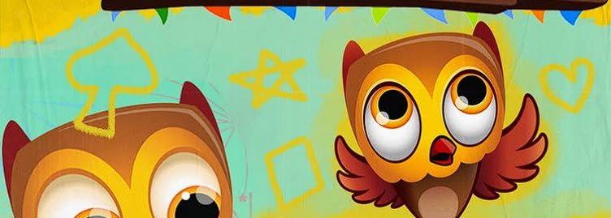
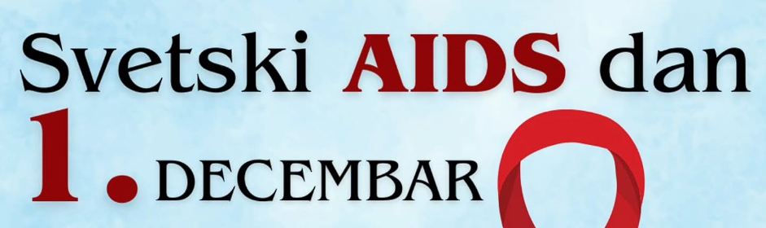
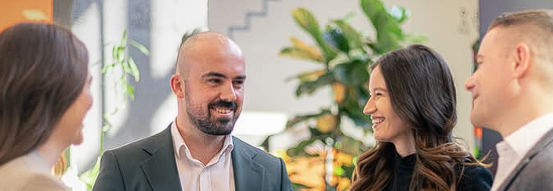

Naši projekti
Aktivnosti i projekti kroz koje unapređujemo studentski život i zajednicu.

Humanitarna akcija "Budi nečiji Deda Mraz"

Humanitarni turnir "Slagalica"

Obeležavanje svetskog dana borbe protiv side
